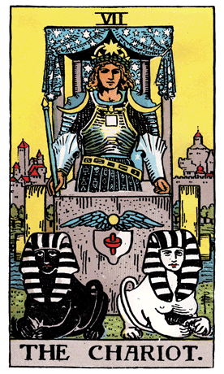

Continuing our exploration of the Major Arcana in the Rider-Waite Tarot Deck, we encounter The Chariot, a symbol of triumph, willpower, and control. The Charioteer stands in a chariot adorned with celestial symbols, representing mastery over opposing forces and the journey towards victory.
The Charioteer wears a crown with an eight-pointed star, signifying balance and harmony between the conscious and unconscious realms. The black and white sphinxes pulling the chariot represent opposing forces—conscious and unconscious, light and shadow—being harnessed and directed towards a common goal.
The Chariot's canopy features a complex pattern of stars and astrological symbols, highlighting the influence of cosmic forces on the journey. The Charioteer holds a wand, symbolizing willpower and the determination to overcome obstacles. His armor and protective covering signify the resilience required for the challenges ahead.
In a tarot reading, The Chariot often emerges as a symbol of triumph over adversity, the manifestation of willpower, and the ability to maintain control amidst chaos. It suggests a time for focusing on goals, harnessing inner strength, and navigating through challenges with determination.
The Chariot encourages individuals to align their conscious and unconscious energies, acknowledging both the light and shadow aspects within. It signifies the importance of self-discipline, willpower, and maintaining a clear sense of purpose on the journey towards personal victory.
The Chariot card may also indicate a need for balancing opposing forces in one's life, such as work and personal life, or inner conflicts that require resolution. It prompts individuals to assess their goals, motivations, and priorities, ensuring they are in harmony with their higher purpose.
From a psychological perspective, The Chariot represents the integration of the conscious and unconscious aspects of the psyche. It signifies the ability to navigate through challenges by understanding and channeling inner energies. The Charioteer's control over the sphinxes symbolizes the mastery of one's instincts and emotions for constructive outcomes.
In a reversed position, The Chariot may suggest a lack of control, inner conflict, or a need to reassess goals and priorities. It could indicate challenges in maintaining focus and discipline. In such cases, The Chariot serves as a gentle guide, urging individuals to regain control, align with their higher purpose, and overcome obstacles with renewed determination.
Archetypally, The Chariot aligns with the hero's journey—the narrative of triumph over adversity through self-discovery and willpower. The Chariot embodies the archetype of the victorious warrior who faces challenges head-on and emerges triumphant.
Societally, The Chariot encourages communities to cultivate resilience, determination, and a sense of purpose in the face of challenges. It emphasizes the importance of collective willpower and control to navigate through turbulent times and achieve common goals.
In conclusion, The Chariot in the Rider-Waite Tarot Deck invites us to embark on a journey of triumph through willpower and control. It encourages individuals to harness their inner strength, align with their higher purpose, and navigate through challenges with resilience and determination. The Chariot symbolizes the victorious pursuit of personal and collective goals.